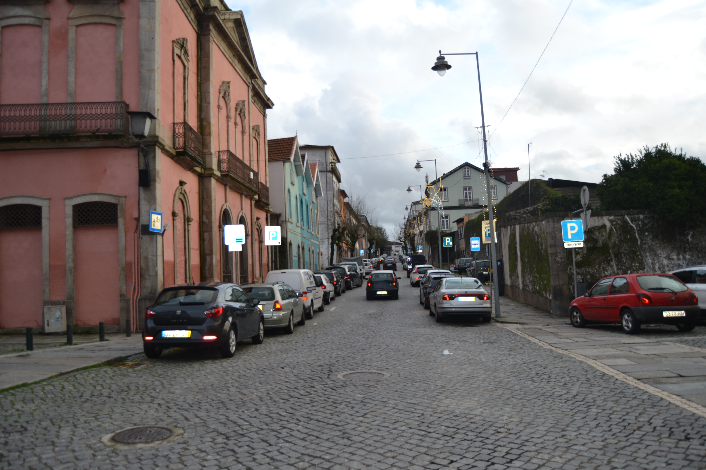
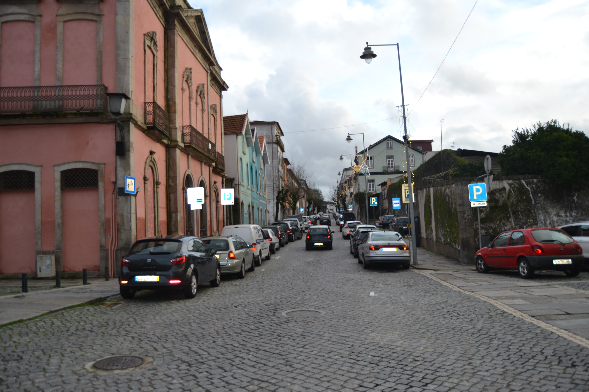
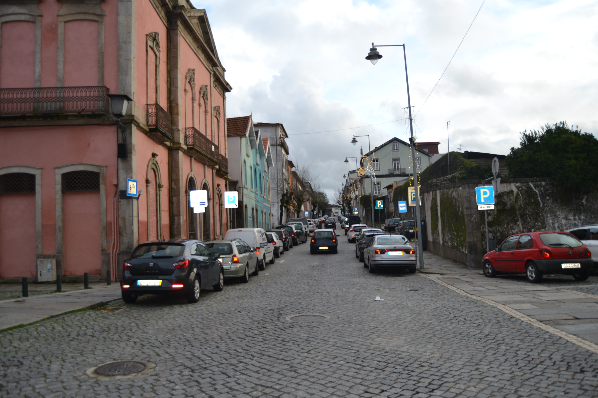
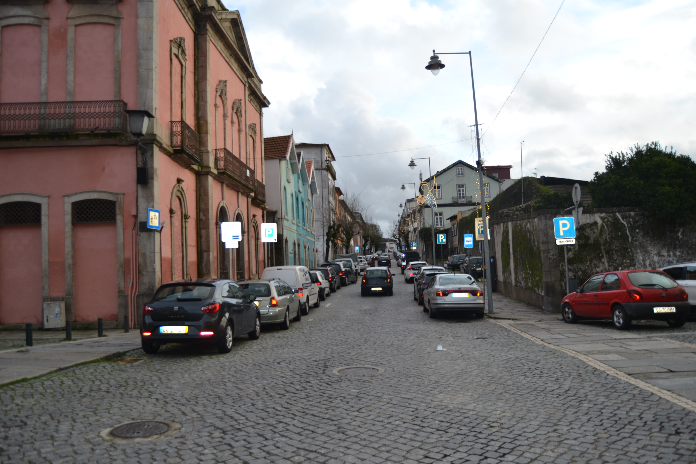

Longa rua, com início no postigo de S. Sebastião e fim na rua de Maximinos . O seu traçado prolongava-se, porém, até à Porta de S. Francisco , através das ruas dos Sapateiros e do Campo .
Decalcando, uma rua da cidade romana, era esta a mais ocidental das artérias intra-muros da velha urbe medieval.
Ponto privilegiado nas ligações com Maximinos e a capela de S. Sebastião , o seu traçado foi no séc. XIX (inícios?) violentamente rompido com a continuação da rua das travessas, que, abrindo uma brecha nas muralhas, a ligou com o campo de S. Miguel o Anjo ; no fim do mesmo século, por volta de 1880 , foi alargada, sendo destruídas todas as casas, excepto uma, de dois pisos, no seu extremo Norte, recebendo então o nome de D. Frei Caetano Brandão.
Em 1750 apresentava-se dividida em duas: uma, a Norte da rua das Travessas com o nome de rua Verde; outra, a Sul, chamada somente Couto do Arvoredo .
O Couto do Arvoredo estava parcialmente construído (ainda hoje, aliás, do lado Este conserva os quintais; e os do Oeste só nos anos 60 e 70 do nosso séc. foram ocupados com habitações), com casas simples, de 2 pisos, de um tipo mais frequente fora de muralhas, nos arrabaldes, sem varandas e com as janelas apenas tapadas por portas de madeira.
A rua Verde , embora apresente um tipo de casa também muito simples, e de contrução sem dúvida arcaica, estava já em 1750 toda construída. Mantém, todas as casas apenas com dois pisos (excepto duas), com aberturas predominantemente tapadas por portadas de madeira, raríssimas gelosias e varandas e algumas casas com janela do tipo bracarense. Muito curiosos são os primeiros cinco edifícios do lado Nascente e uma boa parte dos do Poente: são geralmente de dois vãos, 2 pisos, porta no rés do chão e 2 janelas no andar, com um ritmo bem marcado e, sobretudo, com o sobrado muito pronunciado, mostrando bem a fragilidade dos seus materiais construtivos.
Das 24 casas do lado Nascente e 33 do Poente, 3 e 13 são, respectivamente, prazos do Cabido.
Confronta, do sul, com casa foreira à cororaria.
A enfiteuta é filha de Francisco Rodrigues, torneiro.
Confronta, do norte, com casa foreira à cororaria. Entre os anos de 1670 e 1724 esteve unida ao n.º 3.
Corresponde, desde o ano 1627 , à casa n.º 12 da Rua de St.º António . Encontra-se situada defronte do postigo de S. Sebastião .
O enfiteuta é filho de Teresa da Costae de seu marido António Pereira.
Encontram-se situadas junto ao postigo de S. Sebastião e foram construídas, antes de 1563 , no «lugar do Sabugal» , pertencente ao n.º 12 da Rua de Sto. António.
Quintal denominado do Sabugal, que foi de José de Araújo Teixeira.
Estão unidas, num só prazo, desde o ano de 1549 . A casa n.º 9, confronta, do sul com casa foreira ao Hospital de S. Marcos.
Paga pensão à obra da Sé. São enfiteutas os herdeiros de Maria Ribeiro, que pagam 80 reis de foro.
O enfiteuta foi dotado com esta casa.
Entre os anos de 1609 e 1640 pertenceu ao n.º 13.
Os enfiteuras pagavam um foro muito pequeno, dado que as casas tinham sido consideradas arruinadas no último emprazamento, etectuado no ano de 1673 .
Confrontam, do Sul, com casas foreiras ao Hospital de S. Marcos.
Estas casas tinham pertencido a Isabel da Silvae, anteriormente, a Julião Lopes.
Corresponde ao n.º 12 da Rua de Maximinos , para onde tem a fronteira e serventia principais.
| Número de porta | Enfiteuta |
|---|---|
| 1 | Maria Catarina do Céu, religiosa do Salvador |
| 2 | Faustina Pereira |
| 3 | Constantino Teixeira |
| 4 | None |
| 5, 6 e 7 | António Pereira, sapateiro |
| 8 | Teresa da Costa, viúva de António Pereira |
| 9 e 10 | Salvador Pinto, guarda da Sé |
| 11 | None |
| 12 | José Pereira, sapateiro |
| 13 | Manuel da Costa Vasconcelos |
| 14 | Padre Matias de Lemos |
| 15 e 16 | Manuel da Costa Vasconcelos |
| 17 e 18 | Os herdeiros de Duarte Mendes de Oliveira |
| 19 | Manuel Vieira |
| 20 | None |